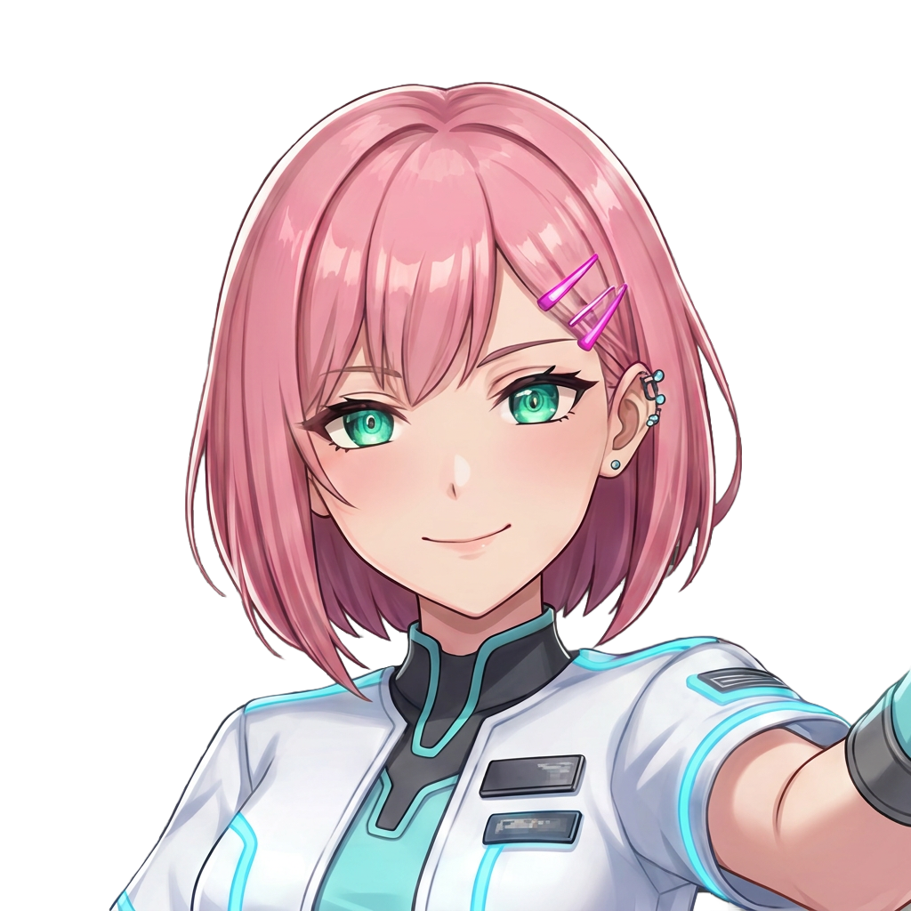
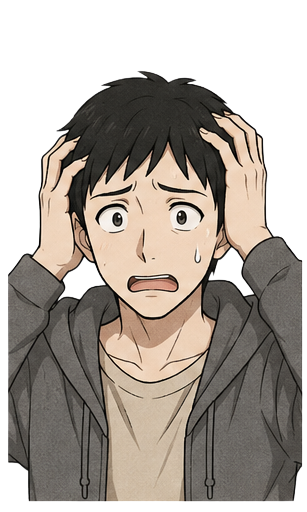
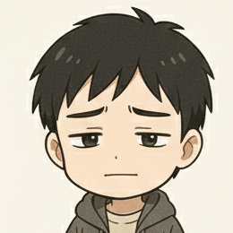
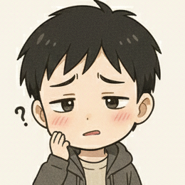
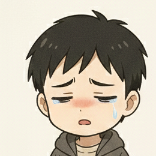
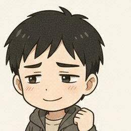
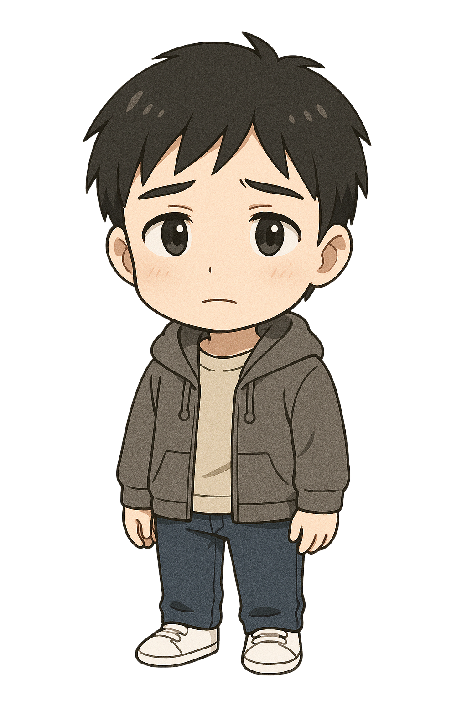

慰めも励ましもナシ。心理学と行動データで、あなたの「モテない原因」を60秒で特定。
タイプ別の処方箋まで出すから、覚悟だけしておいて。
さあ、どっちから暴かれたい？
診断：全8問・選ぶだけ・登録不要 ／ 動画：まず世界観から入りたい慎重派向け


診断の前に人柱を見たい人へ。ユウが斬られる姿に、心当たりしかないはずだけど。
他人事だと笑えたなら大丈夫。笑えなかったら、診断で確かめて。
全部ユウの日常セリフ。「これ俺じゃん」が1個でもあったら、診断行きが確定なの。

「面白い話とかないんで、聞かれたら答えるスタイルなんですよね。」
「深夜に2時間も電話してくれたんですよ？ これ脈ありでしょ。」

「既読ついて5分返信ないと、つい追いLINEしちゃうんですよね。」

「誘うタイミングを待ってたら、いつのまにか半年経ってました。」
「『優しいね』って言われたんで、手応えはあると思うんですよ。」

「服は全身黒で無難にまとめてます。だって失敗しないし。」
…で、レンに言わせると
この掛け合いが、恋愛を丸裸にする。ユウのセリフが痛いのは、心当たりがある証拠なの。
スマホの中に住む恋愛分析AI。慰めない、励まさない。あなたが目を逸らしてきた「原因」だけを、データで淡々と突きつける。
「その自信、どこから来てるの。データは真逆だけど。」

恋愛歴ほぼゼロの20代会社員。本人は真剣なのに、やることなすこと全部裏目。あなたが言えない言い訳を、先に全部言ってくれる。
「え！？ 俺、今まで全部それやってました…！」
「気合い」「自信を持て」みたいな精神論は禁止。誰がやっても再現できる行動だけ渡す。
「なんか避けられてる」の正体は、心理学で説明がつく。名前がつけば、初めて対処できるの。
「なんとなくモテない」を4タイプ×優先度に分解。最初に直すべき急所が1つに絞れる。
診断して満足、で終わらせない。タイプ別に、明日そのまま実行できる行動レベルで渡す。
結論。「フォローしておかないと、損するよ。」
ショート動画・投稿は毎日更新中。今日刺さったなら、明日も刺されにきて。